WorldCrafter: Consistent Video World Model with Implicit 3D-aware Memory
arXiv preprint, 2026
I'm a Senior Researcher at Tencent ARC Lab, where I lead a team building a World Model. We see it as the next paradigm for machine intelligence: by scaling up next-state prediction and generation, we want one model that understands the physical world, where a state is a multi-modal representation of how the world looks, moves, and changes. This grows out of our earlier Crafter family of video models (DepthCrafter, ViewCrafter, TrajectoryCrafter, MotionCrafter), where we learned to perceive and generate dynamic 3D scenes from video. Our work was an ICCV 2023 Best Paper Finalist and won Best Paper at the PixFoundation workshop, CVPR 2025.
I earned my Ph.D. in Computer Science and Engineering from The Chinese University of Hong Kong (CUHK) in 2022, advised by Prof. Tien-Tsin Wong. Before joining Tencent, I spent a year at PICO Mixed Reality, ByteDance. I regularly review for SIGGRAPH, SIGGRAPH Asia, CVPR, ICCV, ECCV, NeurIPS, ICML, EG, TVCG, and IJCV.
We're hiring research interns and full-time researchers to work on the World Model with us. Feel free to email me with a short note on what you'd like to build.
[09/2026]
Introducing WorldCrafter,
a consistent video world model with 3D-aware memory, and
GAE,
a geometry-native latent space for 3D-consistent world generation. Both papers are now on arXiv.
[08/2026]
Invited talk at CADCG: "世界模型的坐标系:从像素网格到射线空间".
[06/2026]
Two papers accepted to ECCV'26, including Track4World.
[05/2026]
Our MotionCrafter selected as a Highlight at CVPR'26!
[03/2026]
Invited talk at Valse: "From 4D Object Generation to 4D World Interactions" (Mar. 18).
[03/2026]
Session host at China3DV, 时空重建与世界模型.
[01/2026]
Invited to give a talk at Winter3DV, a closed-door workshop on 3D vision.
[10/2025] On the Program Committee for Mini3DV 2025 (a high-quality closed-door workshop), World Modeling session.
[09/2025]
ViewCrafter accepted to TPAMI!
[06/2025]
Three papers (one Oral) accepted to ICCV'25.
[06/2025] Our DepthCrafter selected as Best Paper at the PixFoundation workshop, CVPR'25!
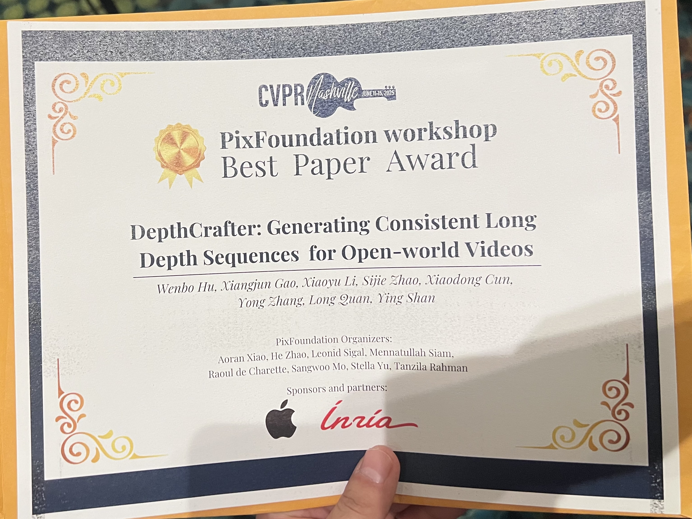
[06/2025]
Invited talk at CSIG about
"基于视频生成模型的场景演变生成最新进展".
[04/2025]
Invited talk at China3DV 2025 about
"GenConstruction".
[03/2025]
Invited talk at GAMES about
"Generative Novel View Synthesis".
[03/2025]
Invited talk at AnySyn3D
about
"Video Diffusion for 3D".
[03/2025]
We released code and models for TrajectoryCrafter.
[02/2025]
Three papers accepted to CVPR'25.
[10/2024]
Invited talks at Chinagraph
about:
[DepthCrafter, StereoCrafter,
ViewCrafter] and
[Tri-MipRF, Rip-NeRF, Analytic-Splatting].
[09/2024]
One paper accepted to NeurIPS'24.
[07/2024]
Four papers accepted to ECCV'24.
[05/2024]
Invited talk at NeRF/GS & Beyond about Anti-Aliasing in Neural Rendering. [Slides]
[04/2024]
Invited talk at China3DV 2024 about Anti-Aliasing in Neural Rendering.
[03/2024]
One paper conditionally accepted to SIGGRAPH'24.
[02/2024]
One paper accepted to CVPR'24.
[10/2023]
Our Tri-MipRF named an ICCV'23 Best Paper
Finalist!
[08/2023]
Invited talk at GAMES about
our Tri-MipRF.
[07/2023]
Our Tri-MipRF was accepted to ICCV'23 as ORAL presentation.
[07/2023]
One paper on invertible image downscaling accepted to TIP'23.
[08/2022]
One paper conditionally accepted to SIGGRAPH Asia'22 (Journal Track).
[05/2022]
Defended my Ph.D. dissertation.
[08/2021]
Invited talk at 智东西
about our BPNet.
[07/2021]
One paper on lighting estimation accepted to TIP'22.
[07/2021]
Two papers accepted to ICCV'21.
[07/2021]
One paper on 3D human pose estimation accepted to ACM MM'21.
[06/2021]
Invited talk at ScanNet CVPR'21 Workshop about
our BPNet (Recording).
[06/2021]
Code released for BPNet.
[03/2021]
One paper conditionally accepted to CVPR 2021 (Oral).
[08/2020]
One paper conditionally accepted to SIGGRAPH Asia 2020.
[08/2018]
Started my Ph.D study at CUHK.
[01/2018] Research intern at SenseTime.
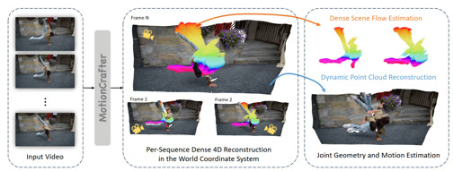
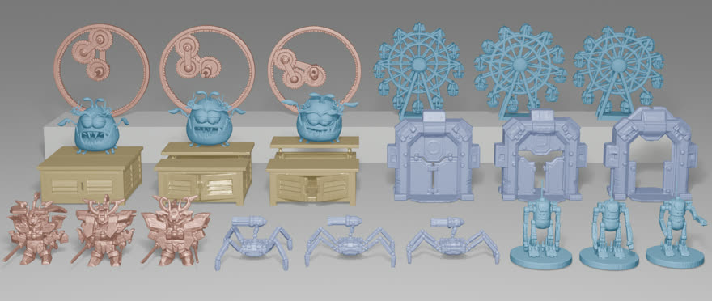
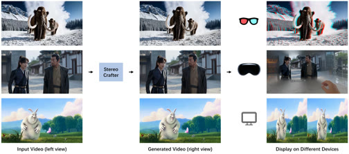
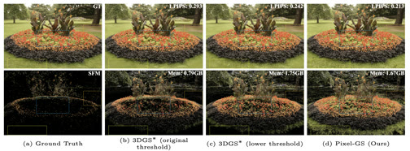
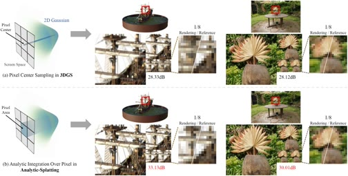
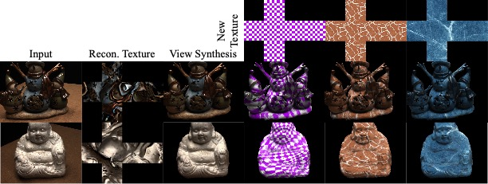
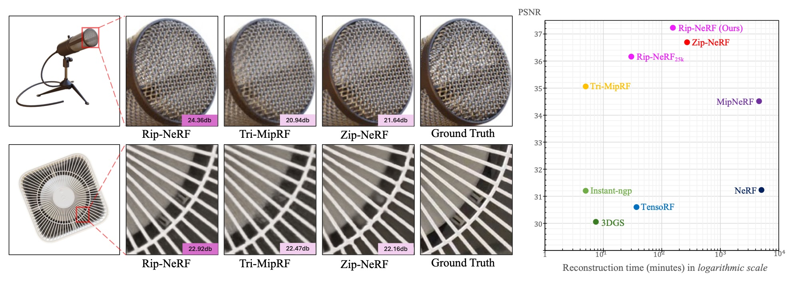
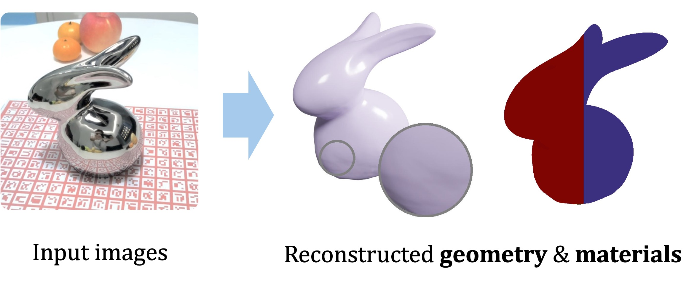
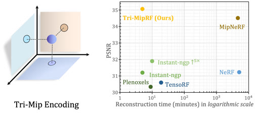
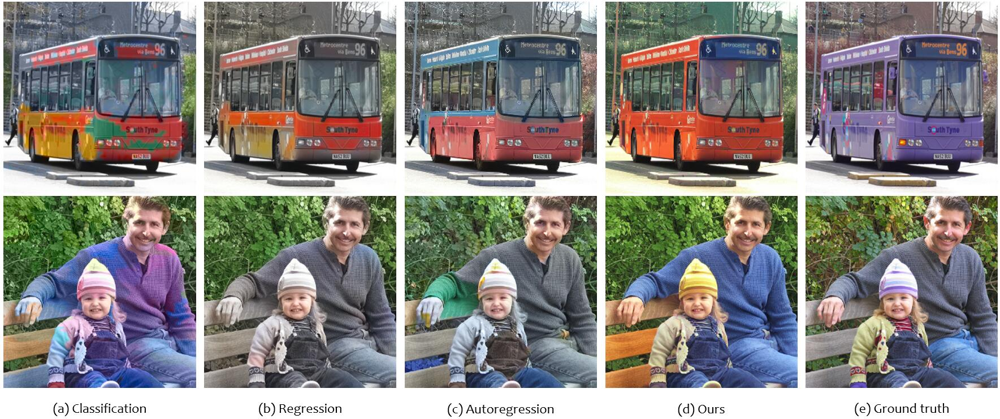
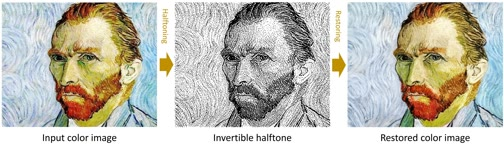
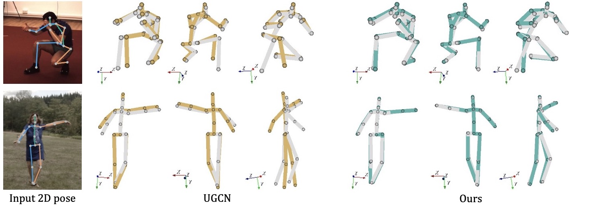
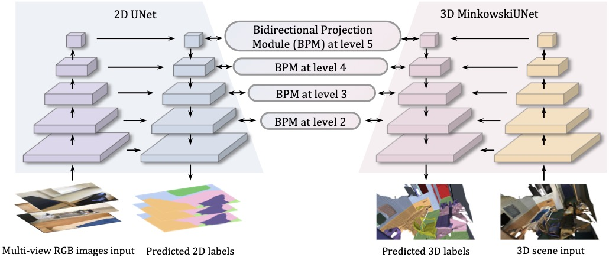
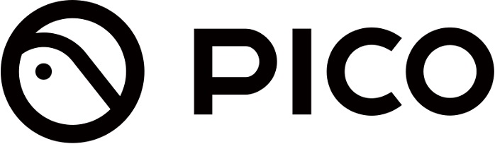
A few launches, demos, and reactions to our work.
Excited to share our #TrajectoryCrafter, a diffusion model for Redirecting Camera Trajectory in Monocular Videos!
— HU, Wenbo (@wbhu_cuhk) March 10, 2025
Try to explore the world underlying your videos~
Page: https://t.co/hWuDRDcv10
Demo: https://t.co/e3JF0SSXIC
Code: https://t.co/Y84MN6D2iO pic.twitter.com/WAS9Vbbosu
Introducing 𝚅𝚒𝚎𝚠𝙲𝚛𝚊𝚏𝚝𝚎𝚛 🥳. 𝚅𝚒𝚎𝚠𝙲𝚛𝚊𝚏𝚝𝚎𝚛 can generate high-fidelity novel views from single or sparse input images with accurate camera pose control!
— Jinbo Xing (@Double47685693) September 5, 2024
✨Paper: https://t.co/dH4Dw0Eb1e
🎯Code: https://t.co/53ai21Px99
🥁Demo: https://t.co/9xCyqtsFco pic.twitter.com/R5ZZpYfdM3
I ported DepthCrafter to ComfyUI! 🔥
— akatz (@akatz_ai) October 18, 2024
Now you can generate super stable depthmap videos from any input video.
The VRAM requirement is pretty high (>16GB) if you want to render long videos in high res (768p and up)
It pairs well with Depthflow!
Repo link in comments below👇 pic.twitter.com/dlS5wr7mRU
Introducing StereoCrafter: Transforming monocular videos into high-fidelity 3D movies, compatible with various depth estimation methods and currently performing best with DepthCrafter. Feel free to download and experience the 3D results on our project page using Vision Pros,… pic.twitter.com/6YEHisStz8
— Ying Shan (@yshan2u) September 12, 2024
Excited to share our DepthCrafter, a super consistent video depth model for long open-world videos!
— HU, Wenbo (@wbhu_cuhk) September 4, 2024
Project webpage: https://t.co/9SiMUv4hoW https://t.co/qy55L7cm44 pic.twitter.com/TZBWnjEGmk
— Kosta Derpanis (@CSProfKGD) October 4, 2023